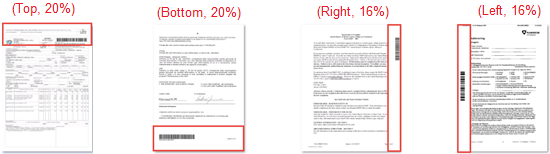

addRegion Method
Description
Adds an area of the image to the selection for barcode recognition.
Syntax
.addRegion(EnumScanRegionSide emSide, int iPercentage);Parameters
-
ScanRegionSide emSide - The type of the area.
-
iPercentage - The percentage measured from region side based on the parameter "emSide". Allowed values range from 1 to 100.
Remarks
By default, the barcode reader will search the whole image. You can speed up the recognition process by specifying a search area.

If iPercentage < 1 or iPercentage > 100, it will return CustomedRegionInvalid.
Return value
bool
true indicates success. false indicates failure.
When false is returned, check getErrorCode or getErrorString for error information.
Example
var dbrObject;
dynamsoft.dbrEnv.init(function () { dbrObject = new dynamsoft.dbrEnv.BarcodeReader(); }, function (errCode, errMsg) { alert(errMsg); });
dbrObject.clearAllRegions();
dbrObject.addRegion(dynamsoft.dbrEnv.EnumScanRegionSide.ESRS_Left, 50);
dbrObject.addRegion(dynamsoft.dbrEnv.EnumScanRegionSide.ESRS_Right, 20);
See Also
JavaScript > Class > BarcodeReader > addRegion (iLeft,iTop,iRight,iBottom,bByPercentage)
JavaScript > Class > BarcodeReader > clearAllRegions
JavaScript > Enumeration > EnumScanRegionSide